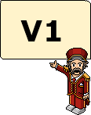

So, you want to know more about us then eh?
There isn't too much to know about KeepAnOpenMind, but we will try and keep this filled with some information that may be useful to you, such as where TomAldy came up with the idea.
Well, we will begin with a simple explanation of how the whole idea of KeepAnOpenMind began...
KeepAnOpenMind started as a fansite called 'EpicHabbo.net' which was opened back in 2008, same layout, more or less the same content, along with the same owner. The fansite failed to due a number of reasons...
- Habbo became less appealing to TomAldy.
- There was not enough staff to support the fansite.
- The expense of running a fansite was too much for TomAldy at such a young age.
As TomAldy stopped playing Habbo, he forgot how interesting it can be for meeting new people and sharing interests, so he thought he would try a different approach as he returned to the world of Habbo, he found openHabbo and joined the vibeArray community.
So there you have it, there is currently not much history to KeepAnOpenMind, but we are sure that'll change as the website grows and gains more popularity; we already have A LOT of plans for the future!
Look below for the current version of KeepAnOpenMind...

As you can see we are a very new fansite to the openHabbo circle...